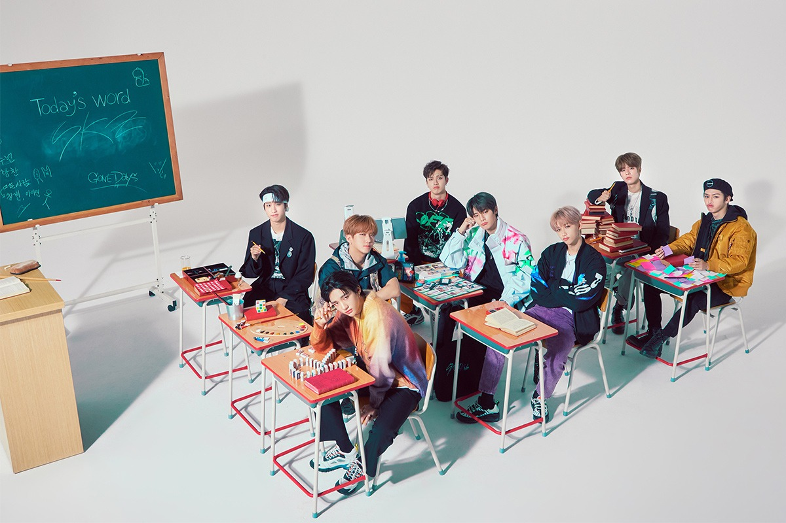

Pré-estreia: Stray Kids e Mixtape
A subunidade 3RACHA, composta por Bang Chan, Changbin e Han, existia antes do Stray Kids. Enquanto os nove ainda eram trainees, Bang Chan escolheu cada membro do grupo. Eles então participaram do reality show da Mnet Stray Kids (nomeado em homenagem ao grupo), no qual tiveram vários desafios a cumprir juntos para provar à JYP que mereciam estrear como nove, o que era seu desejo. "Parte do que diferencia o Stray Kids é sua ênfase elevada na autocomposição [ 2 ] ", e os desafios no show refletiram isso, como quando eles tiveram que criar suas próprias músicas e coreografias. Eles lançaram um single digital intitulado " Hellevator " durante o show em 7 de novembro de 2017. Embora dois membros - Lee Know e Felix - tenham sido eliminados no show, eles eventualmente receberam uma segunda chance. Foi anunciado no último episódio que o grupo estrearia como nove. O Stray Kids lançou o álbum de pré-estreia Mixtape em 8 de janeiro de 2018. Todas as músicas apresentadas foram criadas inicialmente durante o reality show.

2018: Estreia com I Am Not , seguido pelos mini-álbuns I Am Who e I Am You
Stray Kids estreou em 25 de março de 2018 com I Am Not e sua faixa-título "District 9". O grupo anunciou seu nome de fandom, STAY, em 1º de agosto. Isso foi alguns dias antes de seu primeiro retorno em 6 de agosto com a faixa-título "My Pace" e o mini-álbum I Am Who . Finalmente, eles lançaram I Am You em 22 de outubro. Os três mini-álbuns, a série I Am , foram todos lançados em menos de um ano e fazem parte do mesmo ciclo narrativo girando em torno do tema da identidade e da autodescoberta.
2019: trilogia 'Clé', saída de Woojin, turnê mundial e "Mixtape: Gone Days"
Clé 1: Miroh foi lançado no primeiro aniversário da estreia do grupo, 25 de março de 2019. "MIROH" é uma palavra criada pelo Stray Kids; 'miro' significa 'labirinto' em coreano, e o H no final de MIROH simboliza o céu ou o inferno, o que significa que há dois lugares possíveis para onde ele pode levar. O álbum aborda o assunto de sobreviver em um novo mundo que pode ser difícil - no caso do Stray Kids, esse novo mundo é tanto celebridade quanto vida adulta. Foi com a faixa-título desse álbum, "Miroh", que o grupo recebeu sua primeira vitória em um show musical, em 4 de abril.
Eles voltaram em 19 de junho com Clé 2: Yellow Wood . As séries "Clé" e "I Am" foram então conectadas.
Por
exemplo, a cidade que Stray Kids está olhando no final do videoclipe de "I Am You" é MIROH, e o telhado
de Clé
2: Yellow Wood foi onde o videoclipe "MIROH" terminou.
Em 27 de outubro, foi anunciado pela JYP que Woojin havia deixado o grupo e a agência devido a
circunstâncias
pessoais. Como resultado disso, o mini-álbum Clé: Levanter , que estava programado para ser lançado em
25 de
novembro, foi adiado para ser lançado em 9 de dezembro. [ 6 ] O álbum incluiu as duas faixas
pré-lançadas "
Double Knot " e " Astronaut ", e também a faixa-título "Levanter".
O grupo deu início à sua turnê mundial 'District 9: Unlock' em 23 de novembro, com um primeiro show em
Seul.
Stray Kids lançou " Mixtape: Gone Days " em 26 de dezembro. A música é sobre o conflito entre a nova
geração,
que quer fazer as coisas do seu jeito e ser capaz de ganhar maturidade por conta própria, e as gerações
mais
velhas, que reclamam e pressionam para fazer as coisas como eram feitas no passado. O título também é um
jogo de
palavras, pois soa como a palavra coreana "ggondae", um termo para pessoas velhas, intrometidas e
mandonas. [ 8
]
Seu mais recente comeback aconteceu em julho deste ano, com o álbum “ATE”, que traz a title track "Chk Chk Boom", com participação especial dos atores Ryan Reynolds e Hugh Jackman, protagonistas do filme "Deadpool & Wolverine", da Marvel.